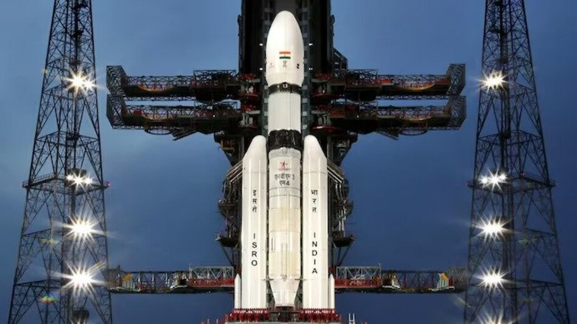
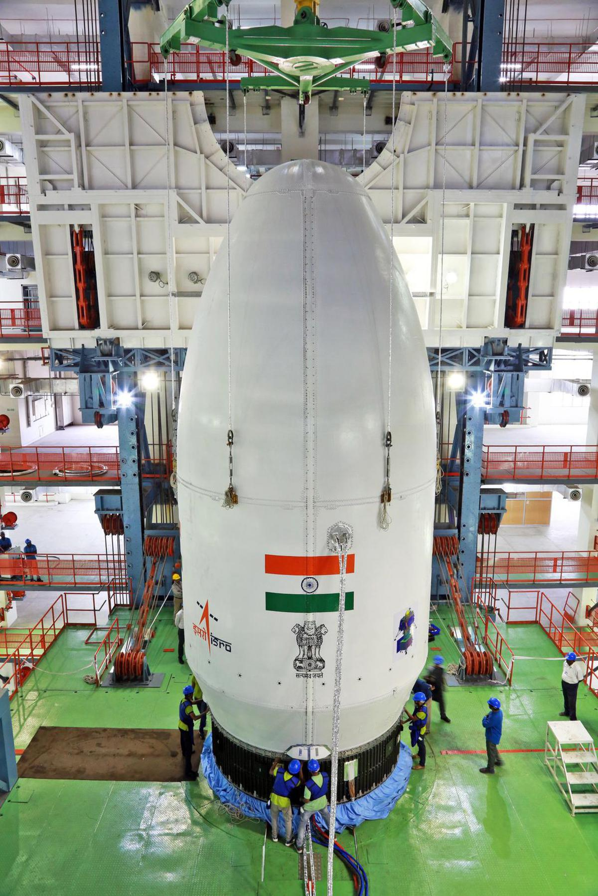
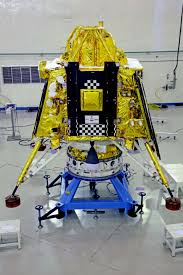
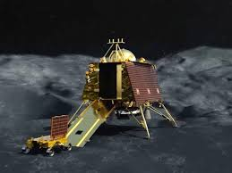
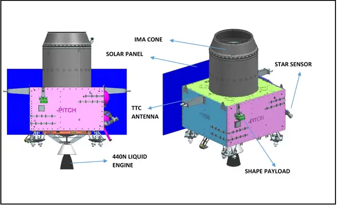
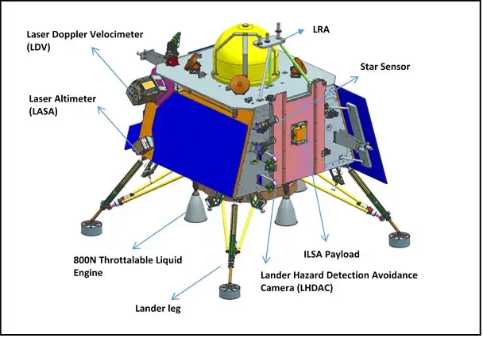
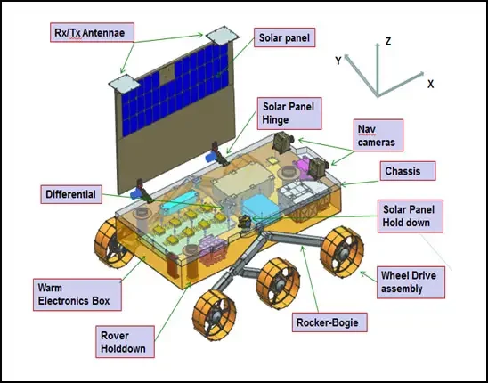
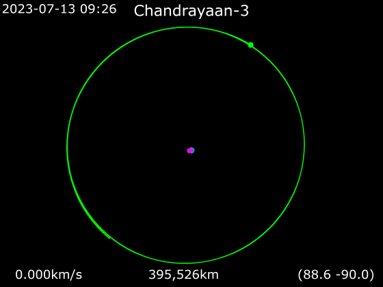
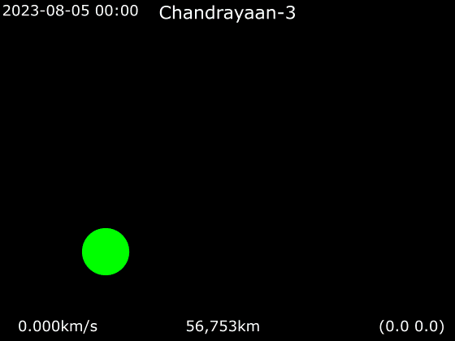

चंद्रयान 3

लॉन्च
चंद्रयान-3 चांद पर खोजबीन करने के लिए भारतीय अंतरिक्ष अनुसंधान संगठन (इसरो) द्वारा तैयार किया गया तीसरा चंद्र मिशन है। [2]
इसमें चंद्रयान-2 के समान एक लैंडर और एक रोवर होगा, लेकिन इसमें ऑर्बिटर नहीं होगा।[3] [4]ये मिशन चंद्रयान-2 की अगली
कड़ी है, क्योंकि पिछला मिशन सफलता पूर्वक चांद की कक्षा में प्रवेश करने के बाद अंतिम समय में मार्गदर्शन सॉफ्टवेयर में गड़बड़ी
के कारण सॉफ्ट लैंडिंग के प्रयास में विफल हो गया था, सॉफ्ट लैन्डिंग का पुनः सफल प्रयास करने हेतु इस नए चंद्र मिशन को
प्रस्तावित किया गया था। [5] चंद्रयान-3 का लॉन्च सतीश धवन अंतरिक्ष केंद्र शार, श्रीहरिकोटा से 14 जुलाई, 2023 शुक्रवार को
भारतीय समय अनुसार दोपहर 2:35 बजे निर्धारित किया गया है।
इतिहास
चंद्रमा पर सॉफ्ट लैंडिंग की काबिलियत प्रदर्शित करने के लिए चंद्रयान कार्यक्रम के दूसरे चरण में, इसरो ने एक ऑर्बिटर, एक लैंडर
और एक रोवर से युक्त लॉन्च वाहन मार्क -3 (एलवीएम 3) नामक लॉन्च वाहन पर चंद्रयान-2 लॉन्च किया। प्रज्ञान रोवर को तैनात
करने के लिए लैंडर को सितंबर, 2019 को चंद्र सतह पर टचडाउन करना था। [7] [8]इससे पहले चंद्रमा के दक्षिणी ध्रुव पर एक
मिशन पर जापान के साथ सहयोग के बारे में रिपोर्टें सामने आई थीं, जहां भारत लैंडर प्रदान करता जबकि जापान लॉन्चर और रोवर
दोनों प्रदान करने वाला था। मिशन में साइट सैंपलिंग और चांद पर रात के समय सर्वाइव करने की टेक्नोलॉजी शामिल करने की भी
संभावनाएं थीं। विक्रम लैंडर की बाद की विफलता के कारण 2025 के लिए जापान के साथ साझेदारी में प्रस्तावित चंद्र ध्रुवीय खोजबीन
मिशन (LUPEX) के लिए आवश्यक लैंडिंग क्षमताओं को प्रदर्शित करने के लिए एक और मिशन (चंद्रयान-3) करने का प्रस्ताव दिया
गया। [11] मिशन के महत्वपूर्ण फ्लाइट ऑपरेशन के दौरान, यूरोपीय अंतरिक्ष एजेंसी (ईएसए) द्वारा संचालित यूरोपीय अंतरिक्ष ट्रैकिंग
(एस्ट्रैक) एक अनुबंध के अंतर्गत इस मिशन को सपोर्ट प्रदान करेगी। [12]

उद्देश्य
इसरो ने चंद्रयान-3 मिशन के लिए तीन मुख्य उद्देश्य निर्धारित किए हैं, जिनमें शामिल हैं:
1. लैंडर की चंद्रमा की सतह पर सुरक्षित और सॉफ्ट लैंडिंग कराना।
2. चंद्रमा पर रोवर की विचरण क्षमताओं का अवलोकन और प्रदर्शन।
3. चंद्रमा की संरचना को बेहतर ढंग से समझने और उसके विज्ञान
को अभ्यास में लाने के लिए चंद्रमा की सतह पर उपलब्ध
रासायनिक और प्राकृतिक तत्वों, मिट्टी, पानी आदि पर वैज्ञानिक
प्रयोग करना।

बनावट
प्रोपल्शन मॉड्यूल
इसका प्रोपल्शन मॉड्यूल, संचार रिले उपग्रह की तरह व्यवहार करेगा। प्रोपल्शन मॉड्यूल, लैंडर और रोवर युक्त ढांचे को तब तक अंतरिक्ष
में धकेलता रहेगा जब तक कि अंतरिक्ष यान 100 किमी ऊंचाई वाली चंद्र कक्षा में न पहुँच जाए। प्रोपल्शन मॉड्यूल, लैंडर के अलावा, चंद्र
कक्षा से पृथ्वी के वर्णक्रमीय (स्पेक्ट्रल) और पोलारिमेट्रिक माप का अध्ययन करने के लिए SHAPE (Spectro-polarimetry of
Habitable Planet Earth) नामक एक पेलोड भी ले जा रहा है।
लैंडर
चंद्रयान-2 के विक्रम के विपरीत, जिसमें पांच 800 न्यूटन इंजन थे और पांचवां एक निश्चित थ्रस्ट के साथ केंद्रीय रूप से लगाया गया था। चंद्रयान-3
के लैंडर में केवल चार थ्रॉटल-सक्षम इंजन होंगे, [14] इसके अतिरिक्त, चंद्रयान-3 लैंडर लेजर डॉपलर वेलोसीमीटर (एलडीवी) से लैस होगा। [15]
चंद्रयान-2 की तुलना में इम्पैक्ट लेग्स को मजबूत बनाया गया है और उपकरण की खराबी का सामना करने के लिए एक से अधिक उपाय किए गए हैं।
लैंडर पर तापीय चालकता और तापमान को मापने के लिए Chandra’s Surface Thermophysical Experiment (ChaSTE, चेस्ट), लैंडिंग साइट
के आसपास भूकंपीयता को मापने के लिए Instrument for Lunar Seismic Activity (ILSA) व प्लाज्मा घनत्व और इसकी विविधताओं का
अनुमान लगाने के लिए Langmuir Probe (LP) नामक भारतीय पेलोड शामिल हैं। इसके अतिरिक्त नासा से एक निष्क्रिय लेजर रिट्रोरिफ्लेक्टर ऐरे को
चंद्र लेजर रेंजिंग अध्ययनों के लिए इसमें समायोजित किया गया है।
रोवर
प्रज्ञान रोवर लैंडिंग साइट के आसपास तत्व संरचना का पता लगाने के लिए अल्फा पार्टिकल एक्स-रे स्पेक्ट्रोमीटर (APXS) और लेजर प्रेरित ब्रेकडाउन
स्पेक्ट्रोस्कोप (LIBS) नामक पेलोड से युक्त है।

अनुदान
दिसंबर 2019 में, यह बताया गया कि इसरो ने परियोजना की प्रारंभिक फंडिंग के लिए ₹75 करोड़ (US$10.95 मिलियन) का अनुरोध किया था,
जिसमें से ₹60 करोड़ (US$8.76 मिलियन) मशीनरी, उपकरण और अन्य पूंजीगत व्यय की पूर्ति के लिए होगा, जबकि शेष ₹15 करोड़
(US$2.19 मिलियन) राजस्व व्यय मद में मांगा गया है। परियोजना के अस्तित्व की पुष्टि करते हुए, इसरो के पूर्व अध्यक्ष के. सिवन ने कहा कि
लागत लगभग ₹615 करोड़ (US$89.79 मिलियन) होगी।

